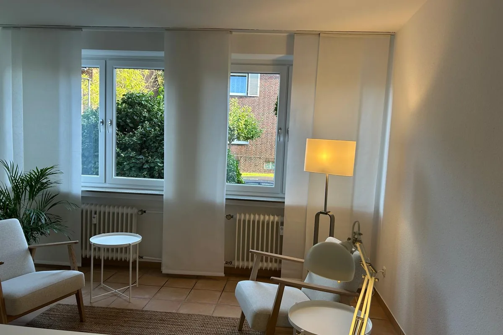

Contact
Get in touch – even if you're unsure.
Whether you are affected yourself, a relative or calling from a practice: I take time for your questions.
- Mobile0163 670 7918From abroad: +49 163 670 7918. I'll call back if I miss you.
- Phone0209 359 765 97
- Emailarkanburak@gmail.com
- AddressAlbertstraße 54
45894 GelsenkirchenGet directions ↗ - AppointmentsBy appointment
